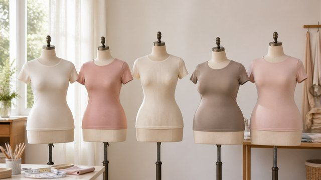
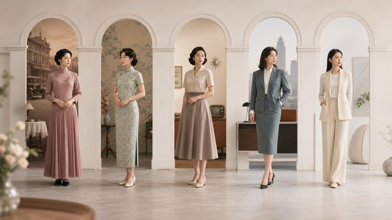

基础与美学
美没有唯一标准，看懂它，才知道它本来就千姿百态。

本专栏文章

什么是胸部美学｜审美从来不是一道单选题
胸部审美从来没有唯一标准。本文讲清它为何随时代与地域不断变化，以及为什么健康与自信，比任何"标准身材"都更值得被看重。
阅读全文

认识乳房的结构｜看懂脂肪、腺体与胸肌的协作
乳房主要由脂肪和乳腺组织构成，长在胸肌之上。本文用大白话讲清它的内部结构，以及大小和形状究竟从何而来。
阅读全文

影响大小与形状的因素｜基因、激素、体重、年龄与体态的自然账本
乳房的大小与形状会被基因、激素、体重、年龄和体态共同影响，而且一直都在自然变化。本文讲清这些因素如何起作用，以及变化为什么是正常的。
阅读全文

如何看待自己的身材｜从被要求变美，到主动接纳自己
你怎么看待自己的身材，往往比身材本身更影响心情。本文帮你分清"我想要"与"我被要求"，把容貌焦虑换回真正健康的自信。
阅读全文

常见胸型有哪些｜各有各的形态，没有标准答案
圆盘型、水滴型、半球型、圆锥型……胸型各有不同，每一种都正常。本文用大白话讲清常见的几种形态，以及为什么不存在所谓的"标准型"。
阅读全文

审美趋势的变迁｜"好看"是时代给出的参考答案
胸部审美从来没有固定答案，它跟着时代、地域和文化一起流动。本文讲清流行如何变迁，以及为什么别被某一时的一套标准绑架。
阅读全文
乳房的发育与变化｜从青春期到孕期的自然节律
乳房的生命周期会随着发育、经期、孕期、哺乳、体重与年龄而变化。本文讲清这些变化的来龙去脉，以及它们为什么都是正常的。
阅读全文
关于胸部的常见误解｜九句话，把误会逐条解开
胸大胸小等于健康？按摩能丰胸？钢圈内衣会致癌？关于胸部，误解远比想象多。本文把常见的说法挑出来逐一澄清，帮你安心。
阅读全文
想要更进一步了解？
任何关于胸部美学、健康或手术的疑问，建议你到正规医疗机构，由执业医师面诊评估。健康与安全，永远优先。
回到顶部